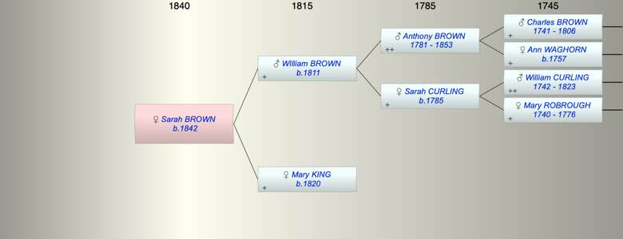

| [Index] |
| Sarah Maria BROWN (1842 - ) |
|  |
| b. 1842 at Clapham |
| Parents: |
| WIlliam BROWN (1811 - ) |
| Mary Freshfield KING (1820 - ) |
| Siblings (5): |
| Anthony BROWN (1844 - ) |
| Mary Elizabeth BROWN (1845 - ) |
| Charlotte A BROWN (1849 - ) |
| WIliam Charles BROWN (1851 - ) |
| Emma G BROWN (1854 - ) |
| Events in Sarah Maria BROWN (1842 - )'s life | |||||
| Date | Age | Event | Place | Notes | Src |
| 1842 | Sarah Maria BROWN was born | Clapham | ex 1881 census | ||
| Created on a Mac™ using iFamily for Mac™ on 8 Oct 2023 |